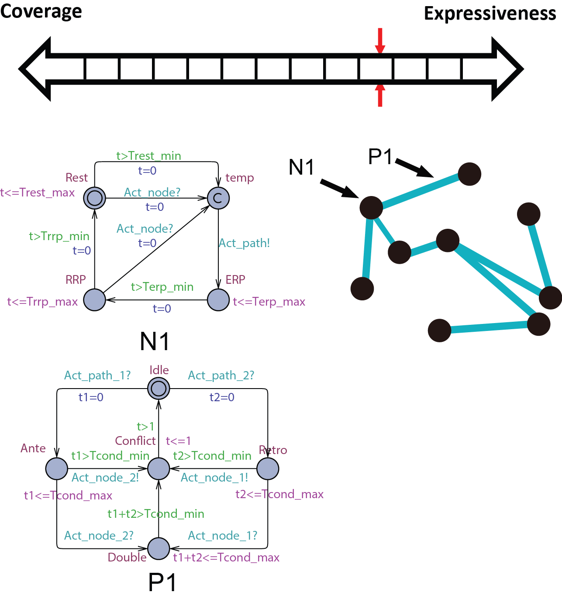
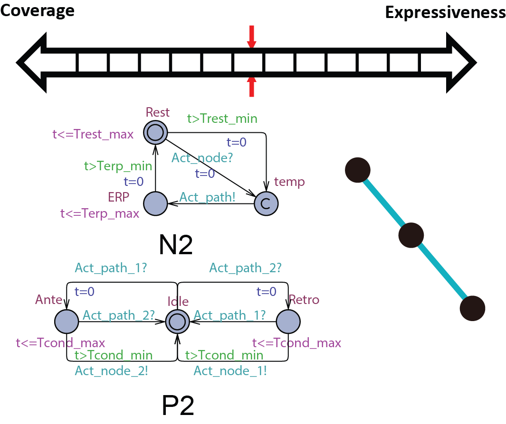
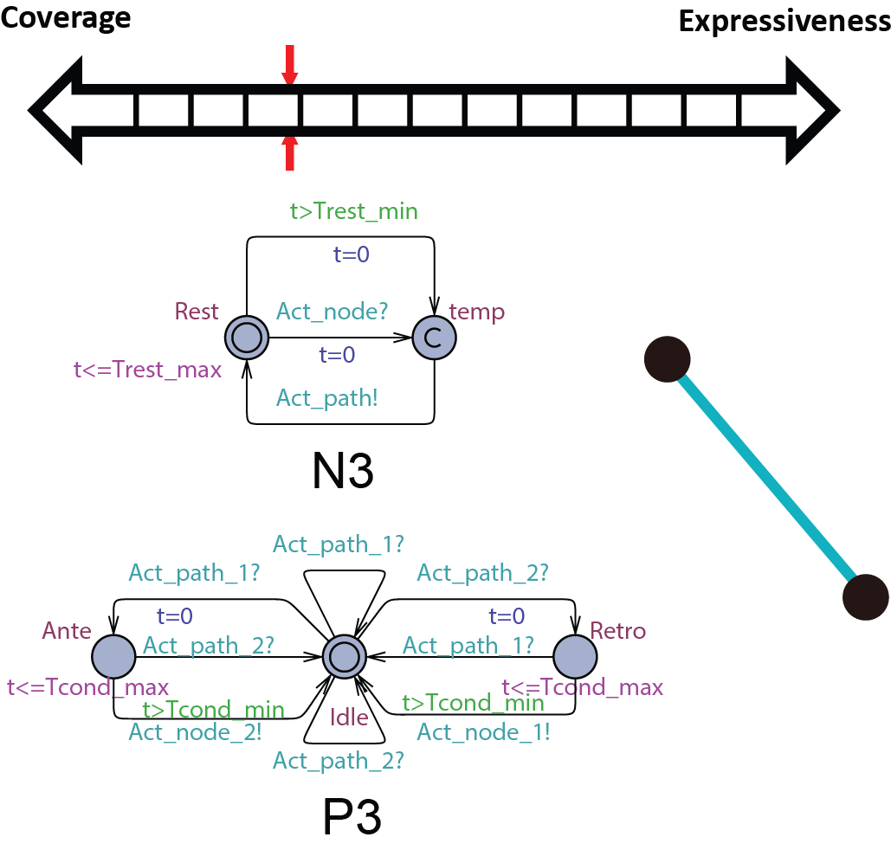
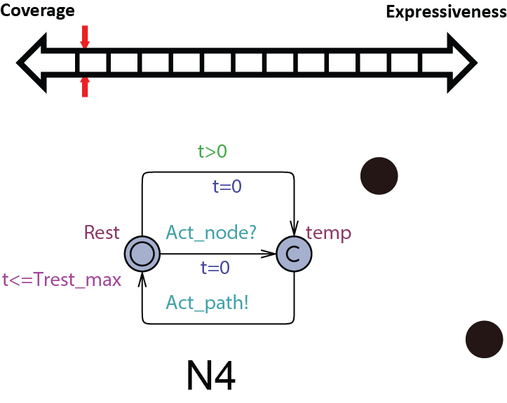

It is essential to guarantee the safety and efficacy of the device software
The final product: The safety and efficacy of the device itself
The development process: Rigorous design process which provides traceability of requirements
During the past decades, pacemakers implanted into patients have recorded episodes of closed-loop interactions (Senario 1 ~ Senario N) between the heart in different conditions (Heart 1 ~ Heart N) and the pacemaker . The recordings are either appropriate pacemaker behavior in response to heart condition which all new pacemakers should also have, or inappropriate pacemaker behavior so that the new pacemakers should avoid. In order to evaluate the performance of a new pacemaker design (Pacemaker X), the inputs from the hearts in those recordings, representing different heart conditions, are fed into the new pacemaker and the outputs of the new pacemaker are compared to the recorded outputs in those senarios.
The problem of open-loop testing is that the input signals from heart do not capture the heart physiology and will not change to different pacemaker outputs. Given a closed-loop interaction between Heart i and Pacemaker i and feed its heart input signals to Pacemaker X will not capture the closed-loop behavior of Pacemaker X under heart condition i. In order to evaluate pacemaker executions under different heart conditions, especially the executions with adquate depth, there has to be a model of the heart which can capture the physiological conditions of the heart and respond to pacemaker outputs.
We developed a model-based design framework for pacemaker software. A heart model structure was designed based on the electrophysiology of the heart. At each development stage a version of the heart model is available to interact with the pacemaker model/implementation.
We chose Timed Automata as the formalism for the heart model for several reasons:
Nondeterminism which enables model abstraction which increase coverage.
In order to be used in different stages during the development process, the structure and parameters of our heart model need to be adjusted to balance between Coverage vs. Expressiveness.
Intuitively, the more complex the model is, there is more constraints on its behaviors, thus limiting its coverage. On the other hand, the added complexity allows us to capture more detailed mechanisms of the heart, allowing us to precisely model a specific heart condition. So instead of developing a single heart model, we developed a series of heart models at different abstraction levels. With Counter-Example-Guided Abstraction & Refinement (CEGAR) framework, we are able to choose the proper level of heart model abstraction during verification thus balancing coverage and expressiveness.
We first start with modeling the electrical behaviors of a heart tissue. A whole model of the heart consists of node automata (N0) which models the timed transitions among different time periods with different behaviors after the tissue is depolarized. The heart can then be modeled as: where N can be arbitarily large.

Vivamus imperdiet condimentum diam, eget placerat felis consectetur id. Donec eget orci metus, Vivamus imperdiet condimentum diam, eget placerat felis consectetur id. Donec eget orci metus, ac adipiscing nunc. Pellentesque fermentum, ante ac interdum ullamcorper. Donec eget orci metus, ac adipiscing nunc. Pellentesque fermentum, consectetur id. Donec eget orci metus, ac adipiscing nunc. Pellentesque fermentum, ante ac interdum ullamcorper. Donec eget orci metus, ac adipiscing nunc. Pellentesque fermentum, ante ac interdum ullamcorper.
 Vivamus imperdiet condimentum diam, eget placerat felis consectetur id. Donec eget orci metus, Vivamus imperdiet condimentum diam, eget placerat felis consectetur id. Donec eget orci metus, ac adipiscing nunc. Pellentesque fermentum, ante ac interdum ullamcorper. Donec eget orci metus, ac adipiscing nunc. Pellentesque fermentum, consectetur id. Donec eget orci metus, ac adipiscing nunc. Pellentesque fermentum, ante ac interdum ullamcorper. Donec eget orci metus, ac adipiscing nunc. Pellentesque fermentum, ante ac interdum ullamcorper.
 Vivamus imperdiet condimentum diam, eget placerat felis consectetur id. Donec eget orci metus, Vivamus imperdiet condimentum diam, eget placerat felis consectetur id. Donec eget orci metus, ac adipiscing nunc. Pellentesque fermentum, ante ac interdum ullamcorper. Donec eget orci metus, ac adipiscing nunc. Pellentesque fermentum, consectetur id. Donec eget orci metus, ac adipiscing nunc. Pellentesque fermentum, ante ac interdum ullamcorper. Donec eget orci metus, ac adipiscing nunc. Pellentesque fermentum, ante ac interdum ullamcorper.
© MedCPS. ALL Rights Reserved.